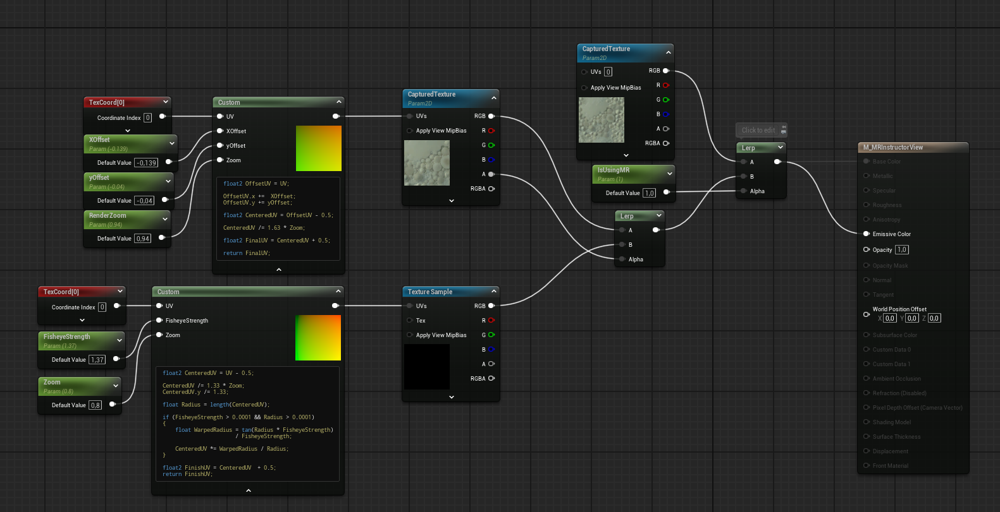

Instructor View
VR training applications often need an external view so an instructor can observe the trainee.
A common solution is to add another camera and render the scene a second time, but this creates a significant performance cost on standalone headsets.
I developed a system that captures one of the eye images Unreal Engine has already rendered and copies it into a render target.
This provides the instructor view without adding an unnecessary third render pass.
Capturing the Existing VR Frame
I started with very little experience in Unreal Engine's rendering pipeline.
The first version used a scene-view extension and a post-processing hook to copy the rendered scene into a texture.
This worked in the editor and on desktop, proving that an existing eye render could be reused.
The implementation had to deal with render-thread access, GPU textures, stereo eye selection, texture formats and differences in resolution between the headset render and the instructor output.
The final copy remains on the GPU, avoiding an expensive transfer through the CPU.
Making It Work on Android
The desktop implementation stopped working when deployed to the headset because Unreal's mobile renderer exposes the frame at different points in the rendering pipeline.
The post-processing hook used on Windows was not called in the same way on Android.
I tested several mobile rendering hooks and found a stable point where the completed VR view could be accessed on the render thread.
This allowed the system to run directly on the headset while still reusing an existing eye image.
Mixed-Reality Support
Capturing the rendered eye works well for fully virtual applications, but mixed-reality projects require an additional step.
The headset's camera feed is composited outside the virtual frame, so the captured texture initially contains the virtual objects over a black background.
I researched headset camera access and began combining a separately retrieved camera image with the captured virtual frame.
Because the camera and rendered eye use different fields of view and lens characteristics, the images require scaling, offsets and distortion correction before they align.

Result
The system now provides a clean foundation for observing VR training sessions without paying the performance cost of another full scene render.